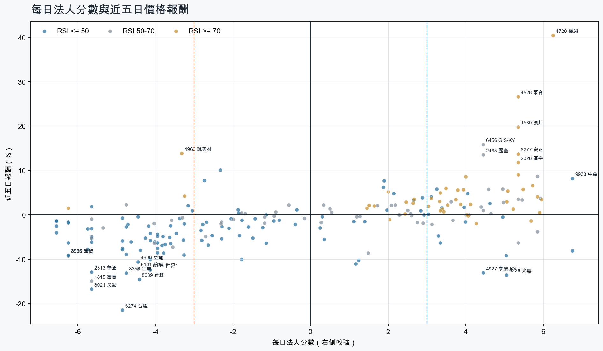
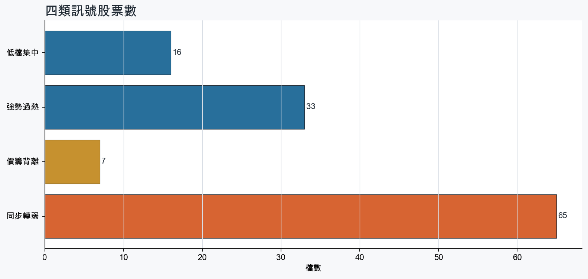
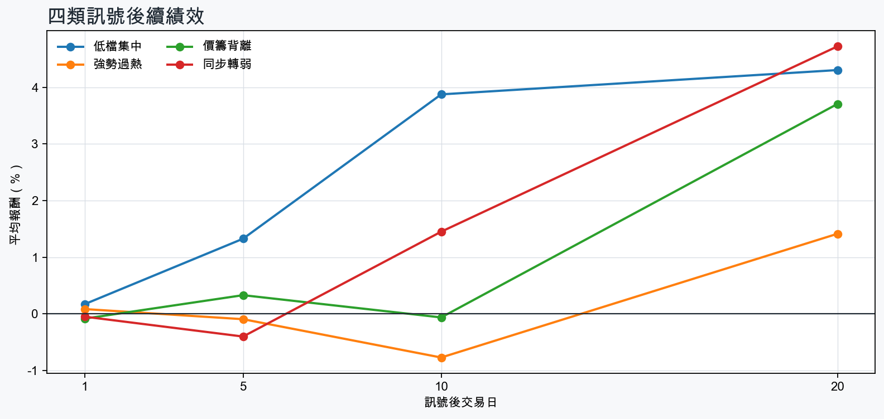

市場情緒偏空
近5日法人合計-6,494,927 張
篩選池上漲比例40.5%
籌碼好 / RSI低15 檔
籌碼差 / 價跌15 檔



EPS × PE VALUATION
法人常用的相對估值
顯示保守、基準與樂觀估值帶，不把單一數字包裝成精準目標價。
最新累計 EPS 依季數年化 × 同產業有效 P/E 的 Q25／中位數／Q75。排除本公司、非正 P/E，並以 1.5×IQR 排除離群值。估值帶是公開資料篩選值，不是法人目標價；未使用分析師預估 EPS。
MOOD × MONEY
情緒與籌碼雷達
熱度代表被討論程度；情緒分與法人方向分開計算。熱門不等於適合追價，樣本不足也不硬判多空。
| 股票 | 情緒 | 討論熱度 | 情緒 × 籌碼 | 情緒 × 基本面 |
|---|---|---|---|---|
| 6274 台燿同步轉弱 | 中性分歧 -5.9信心 30 | 1000 篇 / 0 留言 / 3 則新聞 | 高熱分歧法人分 -4.8 | 基本面與情緒分歧基本面分 +3.6 |
| 8021 尖點同步轉弱 | 偏空 -29.7信心 30 | 1000 篇 / 0 留言 / 3 則新聞 | 情籌雙弱法人分 -5.7 | 基本面佳、情緒悲觀基本面分 +3.6 |
| 8358 金居同步轉弱 | 偏空 -29.7信心 30 | 1000 篇 / 0 留言 / 3 則新聞 | 情籌雙弱法人分 -4.8 | 基本面佳、情緒悲觀基本面分 +3.6 |
| 2409 友達同步轉弱 | 偏空 -29.7信心 30 | 1000 篇 / 0 留言 / 3 則新聞 | 情籌雙弱法人分 -4.8 | 基本面與情緒分歧基本面分 -0.8 |
| 1815 富喬同步轉弱 | 偏空 -29.7信心 30 | 1000 篇 / 0 留言 / 3 則新聞 | 情籌雙弱法人分 -5.7 | 基本面佳、情緒悲觀基本面分 +3.6 |
| 6488 環球晶同步轉弱 | 偏多 +29.7信心 30 | 1000 篇 / 0 留言 / 3 則新聞 | 熱門但法人撤退法人分 -5.8 | 基本面與情緒分歧基本面分 -0.1 |
| 2478 大毅同步轉弱 | 中性分歧 +0.0信心 30 | 1000 篇 / 0 留言 / 3 則新聞 | 高熱分歧法人分 -5.7 | 基本面與情緒分歧基本面分 +3.6 |
| 2337 旺宏價籌背離 | 偏多 +29.7信心 30 | 1000 篇 / 0 留言 / 3 則新聞 | 熱門但法人撤退法人分 -3.0 | 基本面與情緒共振基本面分 +3.6 |
| 3105 穩懋價籌背離 | 偏多 +29.7信心 30 | 1000 篇 / 0 留言 / 3 則新聞 | 熱門但法人撤退法人分 -5.7 | 基本面與情緒共振基本面分 +3.6 |
| 4720 德淵強勢過熱 | 偏多 +29.7信心 30 | 1000 篇 / 0 留言 / 3 則新聞 | 情籌共振法人分 +6.2 | 基本面與情緒共振基本面分 +3.0 |
| 2353 宏碁強勢過熱 | 偏多 +29.7信心 30 | 1000 篇 / 0 留言 / 3 則新聞 | 情籌共振法人分 +6.0 | 基本面與情緒共振基本面分 +3.0 |
| 2356 英業達強勢過熱 | 偏空 -29.7信心 30 | 1000 篇 / 0 留言 / 3 則新聞 | 法人布局、市場悲觀法人分 +5.7 | 基本面佳、情緒悲觀基本面分 +3.0 |
01
籌碼好 / RSI低
優先研究基本面；法人續買且價格止穩時，才適合分批觀察。
| 股票 / 確認狀態 | 每日法人分 | 浦男式近似 | 法人加速度 | RSI / 相對強弱 | 量價確認 | 融資融券 | 每週集保確認 | 基本面 | EPS × 同業 P/E 估值 | 情緒 / 情籌 | 近期消息 | 論壇討論 |
|---|---|---|---|---|---|---|---|---|---|---|---|---|
| 9933 中鼎可研究 · 100 分籌碼與價格確認，可列研究清單 | +6.8法人 +10,665 張 / 5 天 | 命中 · 96站上月線；中期均線偏多；法人籌碼偏多 | +4,142 張近3日 +8,242 / 連續 +7 日 | 49.5相對大盤 +16.1% | 量比 1.42確認分 +6.5價格、量能與籌碼未見明顯弱項 | -%融資 - 張 / 融券 - 張 | +0.53 pp1000張 +0.60 pp | 單月營收年增 +4.3%；2026 Q2 累計 EPS 2.71；2026 Q2 累計營益率 10.5%累計營收年增 -12.0%來源：公開資訊觀測站 | 基準 NT$ 75.39估值帶 57.94–129.5現價 46.25 · 低於估值帶 · 距基準 +63.0%2026 Q2 累計 EPS 2.71 → 年化 5.42其他同業 P/E 10.69／13.91／23.90 · n=70 · 信心中等以 Q2 累計 EPS 年化，不等同分析師全年預估來源：TWSE／TPEx 每日本益比 | 中性分歧 +0.0熱度 84 / 信心 20高熱分歧 | 【11:17 即時新聞】中鼎(9933)盤中續強，外資與主力買盤同調CMoney投資網誌 · 10/27【10:46 即時新聞】中鼎(9933)走強攻高，外資買盤續挺工程題材CMoney · 10/22 | 近期沒有明確提及本股的論壇樣本 |
| 3702 大聯大可研究 · 92 分籌碼與價格確認，可列研究清單 | +4.0法人 +9,225 張 / 4 天 | 接近 · 86中期均線偏多；法人籌碼偏多；法人買盤加速；留意未站月線、動能位置非最佳 | +7,997 張近3日 +9,409 / 連續 +4 日 | 43.2相對大盤 +5.8% | 量比 1.70確認分 +3.9收盤跌破20日線 | -%融資 - 張 / 融券 - 張 | +0.06 pp1000張 +0.12 pp | 單月營收年增 +146.5%；累計營收年增 +72.5%；2026 Q2 累計 EPS 8.422026 Q2 累計營益率 2.6%來源：公開資訊觀測站 | 基準 NT$ 207.5估值帶 167.1–346.2現價 116.5 · 低於估值帶 · 距基準 +78.1%2026 Q2 累計 EPS 8.42 → 年化 16.84電子通路同業 P/E 9.92／12.32／20.56 · n=30 · 信心中等以 Q2 累計 EPS 年化，不等同分析師全年預估來源：TWSE／TPEx 每日本益比 | 樣本不足 +0.0熱度 0 / 信心 0情緒樣本不足 | 近期沒有通過股票語境篩選的新聞 | 近期沒有明確提及本股的論壇樣本 |
| 4927 泰鼎-KY等待確認 · 90 分先等基本面止穩 | +4.5法人 +2,664 張 / 3 天 | 接近 · 65中期均線偏多；法人籌碼偏多；法人買盤加速；留意未站月線、量能異常 | +3,747 張近3日 +3,047 / 連續 -1 日 | 46.5相對大盤 +20.6% | 量比 0.60確認分 +3.1收盤跌破20日線；成交量不足 | -%融資 - 張 / 融券 - 張 | +8.98 pp1000張 +10.48 pp | 單月營收年增 +72.8%；累計營收年增 +9.7%2026 Q2 累計 EPS -5.46；2026 Q2 累計營益率 -22.8%來源：公開資訊觀測站 | 不適用年化 EPS 非正數，不適合使用本益比估值 | 中性分歧 +0.0熱度 84 / 信心 20高熱分歧 | 營收創近十季新高！泰鼎-KY 拚轉虧為盈的兩大動能CMoney · 10/264927 泰鼎-KY - 【千張大戶週報10/22】 - 股市爆料同學會CMoney · 10/24 | 近期沒有明確提及本股的論壇樣本 |
| 3717 聯嘉投控等待確認 · 90 分籌碼有訊號，但價格尚未確認 | +6.8法人 +3,682 張 / 5 天 | 接近 · 76中期均線偏多；法人籌碼偏多；法人買盤加速；留意未站月線、量能異常 | +1,795 張近3日 +2,141 / 連續 +5 日 | 41.1相對大盤 +4.1% | 量比 0.48確認分 +2.2收盤跌破20日線；成交量不足 | -%融資 - 張 / 融券 - 張 | -2.04 pp1000張 -3.92 pp | 單月營收年增 +15.5%；累計營收年增 +427.1%；2026 Q2 累計 EPS 1.152026 Q2 累計營益率 7.7%來源：公開資訊觀測站 | 不適用年化 EPS 與交易所近四季 EPS 差異過大，可能有股本調整或一次性損益 | 樣本不足 +0.0熱度 60 / 信心 10情緒樣本不足 | 【聯嘉投控法說會重點內容備忘錄】未來展望趨勢 20260929富果直送 · 09/30 | 近期沒有明確提及本股的論壇樣本 |
| 2382 廣達可研究 · 90 分籌碼與價格確認，可列研究清單 | +3.1法人 +12,913 張 / 4 天 | 接近 · 89站上月線；中期均線偏多；法人籌碼偏多；留意相對強度普通 | +6,436 張近3日 +11,605 / 連續 +4 日 | 47.2相對大盤 -0.5% | 量比 1.43確認分 +4.3價格、量能與籌碼未見明顯弱項 | -%融資 - 張 / 融券 - 張 | -0.42 pp1000張 -0.38 pp | 單月營收年增 +76.7%；累計營收年增 +99.4%；2026 Q2 累計 EPS 12.932026 Q2 累計營益率 3.1%來源：公開資訊觀測站 | 基準 NT$ 436.3估值帶 317.8–626.6現價 327.5 · 估值帶內 · 距基準 +33.2%2026 Q2 累計 EPS 12.93 → 年化 25.86電腦及週邊同業 P/E 12.29／16.87／24.23 · n=79 · 信心中等以 Q2 累計 EPS 年化，不等同分析師全年預估來源：TWSE／TPEx 每日本益比 | 偏多 +29.7熱度 100 / 信心 30情籌共振 | SpaceX 狂掃輝達晶片 台積、廣達等有望迎新一波訂單經濟日報 · 10/27SpaceX 狂掃輝達晶片 台積、廣達等有望迎新一波訂單聚財網 · 10/27 | 近期沒有明確提及本股的論壇樣本 |
| 6147 頎邦等待確認 · 82 分籌碼有訊號，但價格尚未確認 | +5.0法人 +10,140 張 / 3 天 | 接近 · 75中期均線偏多；法人籌碼偏多；法人買盤加速；留意未站月線、量能異常 | +7,564 張近3日 +5,914 / 連續 +1 日 | 45.5相對大盤 +0.1% | 量比 0.53確認分 +1.2收盤跌破20日線；成交量不足 | -1.8%融資 -647 張 / 融券 -30 張 | -0.27 pp1000張 -2.04 pp | 單月營收年增 +27.9%；累計營收年增 +24.3%；2026 Q2 累計 EPS 1.87仍需觀察下一期財報延續性來源：公開資訊觀測站 | 基準 NT$ 91.59估值帶 61.45–161.5現價 207.0 · 高於估值帶 · 距基準 -55.8%2026 Q2 累計 EPS 1.87 → 年化 3.74半導體同業 P/E 16.43／24.49／43.18 · n=146 · 信心中等以 Q2 累計 EPS 年化，不等同分析師全年預估來源：TWSE／TPEx 每日本益比 | 中性分歧 +0.0熱度 100 / 信心 30高熱分歧 | Factset 最新調查：頎邦(6147-TW)目標價調升至290元，幅度約3.57%｜新聞快訊｜豐雲學堂永豐金證券 · 10/26Factset 最新調查：頎邦(6147-TW)EPS預估上修至5.77元，預估目標價為290元｜新聞快訊｜豐雲學堂永豐金證券 · 10/26 | 近期沒有明確提及本股的論壇樣本 |
| 2402 毅嘉等待確認 · 81 分籌碼有訊號，但價格尚未確認 | +3.3法人 +1,493 張 / 4 天 | 接近 · 76中期均線偏多；法人籌碼偏多；法人買盤加速；留意未站月線、量能異常 | +2,056 張近3日 +335 / 連續 +2 日 | 44.2相對大盤 +8.6% | 量比 0.43確認分 +1.6收盤跌破20日線；成交量不足 | -%融資 - 張 / 融券 - 張 | +0.93 pp1000張 +0.27 pp | 單月營收年增 +15.1%；累計營收年增 +16.9%；2026 Q2 累計 EPS 0.462026 Q2 累計營益率 4.4%來源：公開資訊觀測站 | 基準 NT$ 22.81估值帶 15.87–37.90現價 56.30 · 高於估值帶 · 距基準 -59.5%2026 Q2 累計 EPS 0.46 → 年化 0.92電子零組件同業 P/E 17.25／24.79／41.20 · n=146 · 信心中等以 Q2 累計 EPS 年化，不等同分析師全年預估來源：TWSE／TPEx 每日本益比 | 樣本不足 +9.9熱度 60 / 信心 10情緒樣本不足 | 毅嘉光通訊正式量產/Q4放量擬擴產因應客戶需求- 新聞MoneyDJ · 09/29 | 近期沒有明確提及本股的論壇樣本 |
| 3706 神達等待確認 · 80 分籌碼有訊號，但價格尚未確認 | +3.0法人 +4,328 張 / 4 天 | 接近 · 80法人籌碼偏多；法人買盤加速；買超具延續性；留意未站月線、中期均線未翻多 | +1,703 張近3日 +3,009 / 連續 +4 日 | 50.0相對大盤 +5.8% | 量比 0.91確認分 +1.9收盤跌破20日線；20日線低於60日線 | -%融資 - 張 / 融券 - 張 | +0.82 pp1000張 +1.13 pp | 單月營收年增 +88.6%；累計營收年增 +57.4%；2026 Q2 累計 EPS 2.582026 Q2 累計營益率 4.0%來源：公開資訊觀測站 | 基準 NT$ 87.05估值帶 63.42–125.0現價 80.40 · 估值帶內 · 距基準 +8.3%2026 Q2 累計 EPS 2.58 → 年化 5.16電腦及週邊同業 P/E 12.29／16.87／24.23 · n=79 · 信心中等以 Q2 累計 EPS 年化，不等同分析師全年預估來源：TWSE／TPEx 每日本益比 | 偏空 -29.7熱度 100 / 信心 30法人布局、市場悲觀 | 神達全年營收拚新高UDN · 10/01《投信賣超4-4》東鹼(116)、神達(102)富聯網 · 10/27 | 近期沒有明確提及本股的論壇樣本 |
| 3374 精材可研究 · 79 分籌碼與價格確認，可列研究清單 | +3.2法人 +3,322 張 / 2 天 | 接近 · 71中期均線偏多；法人籌碼偏多；法人買盤加速；留意未站月線、買超延續不足 | +7,812 張近3日 +4,288 / 連續 -1 日 | 41.9相對大盤 +1.8% | 量比 2.94確認分 +2.2收盤跌破20日線 | -1.8%融資 -466 張 / 融券 +32 張 | -1.62 pp1000張 -2.88 pp | 單月營收年增 +21.3%；累計營收年增 +31.5%；2026 Q2 累計 EPS 2.88仍需觀察下一期財報延續性來源：公開資訊觀測站 | 基準 NT$ 141.1估值帶 94.64–248.7現價 463.5 · 高於估值帶 · 距基準 -69.6%2026 Q2 累計 EPS 2.88 → 年化 5.76半導體同業 P/E 16.43／24.49／43.18 · n=146 · 信心中等以 Q2 累計 EPS 年化，不等同分析師全年預估來源：TWSE／TPEx 每日本益比 | 偏多 +29.7熱度 100 / 信心 30情籌共振 | 3374 精材- 追漲停板怎麼辦啦- 股市爆料同學會CMoney · 10/27台灣精材（3467）做什麼？半年 EPS 超越去年，業務技術解析口袋證券 · 10/17 | 近期沒有明確提及本股的論壇樣本 |
| 3714 富采等待確認 · 70 分籌碼有訊號，但價格尚未確認 | +4.0法人 +3,758 張 / 5 天 | 未命中 · 51中期均線偏多；法人籌碼偏多；法人買盤加速；留意未站月線、明顯弱於大盤 | +1,994 張近3日 +3,339 / 連續 +6 日 | 34.2相對大盤 -4.7% | 量比 0.54確認分 -0.0收盤跌破20日線；近20日弱於大盤；成交量不足 | -%融資 - 張 / 融券 - 張 | +0.32 pp1000張 +0.34 pp | 單月營收年增 +18.8%；累計營收年增 +7.5%；2026 Q2 累計 EPS 1.492026 Q2 累計營益率 -5.9%來源：公開資訊觀測站 | 基準 NT$ 71.94估值帶 36.77–113.8現價 61.90 · 估值帶內 · 距基準 +16.2%2026 Q2 累計 EPS 1.49 → 年化 2.98光電同業 P/E 12.34／24.14／38.20 · n=69 · 信心較低以 Q2 累計 EPS 年化，不等同分析師全年預估；交易所無有效本益比，無法交叉檢核近四季 EPS來源：TWSE／TPEx 每日本益比 | 偏多 +29.7熱度 100 / 信心 30情籌共振 | 富采Q4高值應用撐營運，Micro LED備戰2027量產- 新聞MoneyDJ理財網 · 10/02富采(3714) 做什麼？EPS轉盈1.69元真相！賣廠業外與光通訊解析口袋證券 · 09/29 | 近期沒有明確提及本股的論壇樣本 |
| 2305 全友等待確認 · 68 分籌碼有訊號，但價格尚未確認 | +5.0法人 +2,051 張 / 4 天 | 接近 · 61中期均線偏多；法人籌碼偏多；法人買盤加速；留意未站月線、明顯弱於大盤 | +4,052 張近3日 +2,419 / 連續 +4 日 | 40.2相對大盤 -17.0% | 量比 0.42確認分 -0.8收盤跌破20日線；近20日弱於大盤；成交量不足 | -%融資 - 張 / 融券 - 張 | -4.44 pp1000張 -3.36 pp | 單月營收年增 +212.8%；累計營收年增 +125.1%；2026 Q2 累計 EPS 0.51仍需觀察下一期財報延續性來源：公開資訊觀測站 | 基準 NT$ 16.50估值帶 12.43–23.89現價 50.50 · 高於估值帶 · 距基準 -67.3%2026 Q2 累計 EPS 0.51 → 年化 1.02電腦及週邊同業 P/E 12.19／16.18／23.42 · n=78 · 信心中等以 Q2 累計 EPS 年化，不等同分析師全年預估來源：TWSE／TPEx 每日本益比 | 樣本不足 -9.9熱度 60 / 信心 10情緒樣本不足 | 「妖股」全友出關首日摜跌停...逾2千張排隊逃生 分析師這樣看Yahoo股市 · 09/30 | 近期沒有明確提及本股的論壇樣本 |
| 3006 晶豪科等待確認 · 66 分籌碼有訊號，但價格尚未確認 | +4.0法人 +3,315 張 / 2 天 | 未命中 · 56法人籌碼偏多；法人買盤加速；量價健康；留意未站月線、中期均線未翻多 | +7,247 張近3日 +5,830 / 連續 +1 日 | 38.3相對大盤 -5.0% | 量比 1.20確認分 -0.2收盤跌破20日線；20日線低於60日線；近20日弱於大盤 | -%融資 - 張 / 融券 - 張 | -4.77 pp1000張 -4.35 pp | 單月營收年增 +470.2%；累計營收年增 +343.9%；2026 Q2 累計 EPS 27.58仍需觀察下一期財報延續性來源：公開資訊觀測站 | 基準 NT$ 1,372估值帶 910.1–2,425現價 250.5 · 低於估值帶 · 距基準 +447.9%2026 Q2 累計 EPS 27.58 → 年化 55.16半導體同業 P/E 16.50／24.88／43.97 · n=146 · 信心中等以 Q2 累計 EPS 年化，不等同分析師全年預估來源：TWSE／TPEx 每日本益比 | 中性分歧 +0.0熱度 100 / 信心 30高熱分歧 | 晶豪科 公告本公司受凱基證券邀請參加法人說明會Yahoo股市 · 10/27晶豪科董事會決議現增ELITE INVESTMENT SERVICES，上限1億美元Yahoo股市 · 10/27 | 近期沒有明確提及本股的論壇樣本 |
| 2376 技嘉等待確認 · 60 分籌碼有訊號，但價格尚未確認 | +3.4法人 +2,556 張 / 4 天 | 接近 · 63中期均線偏多；法人籌碼偏多；買超具延續性；留意未站月線、法人買盤未加速 | -944 張近3日 +1,884 / 連續 +4 日 | 31.3相對大盤 +1.5% | 量比 0.85確認分 -1.6收盤跌破20日線；法人買盤減速 | -%融資 - 張 / 融券 - 張 | -1.11 pp1000張 -1.47 pp | 單月營收年增 +125.4%；累計營收年增 +63.2%；2026 Q2 累計 EPS 17.732026 Q2 累計營益率 6.2%來源：公開資訊觀測站 | 基準 NT$ 598.2估值帶 435.8–859.2現價 357.5 · 低於估值帶 · 距基準 +67.3%2026 Q2 累計 EPS 17.73 → 年化 35.46電腦及週邊同業 P/E 12.29／16.87／24.23 · n=79 · 信心中等以 Q2 累計 EPS 年化，不等同分析師全年預估來源：TWSE／TPEx 每日本益比 | 樣本不足 +0.0熱度 0 / 信心 0情緒樣本不足 | 近期沒有通過股票語境篩選的新聞 | 近期沒有明確提及本股的論壇樣本 |
| 2464 盟立等待確認 · 65 分籌碼有訊號，但價格尚未確認 | +4.6法人 +2,088 張 / 3 天 | 接近 · 61法人籌碼偏多；法人買盤加速；買超具延續性；留意未站月線、中期均線未翻多 | +2,683 張近3日 +2,488 / 連續 +1 日 | 41.9相對大盤 -5.7% | 量比 1.63確認分 -0.4收盤跌破20日線；20日線低於60日線；近20日弱於大盤 | -%融資 - 張 / 融券 - 張 | -5.52 pp1000張 -5.56 pp | 單月營收年增 +78.0%；累計營收年增 +36.7%；2026 Q2 累計 EPS 0.662026 Q2 累計營益率 4.4%來源：公開資訊觀測站 | 基準 NT$ 25.29估值帶 19.15–41.43現價 177.0 · 高於估值帶 · 距基準 -85.7%2026 Q2 累計 EPS 0.66 → 年化 1.32其他電子同業 P/E 14.51／19.16／31.39 · n=67 · 信心較低以 Q2 累計 EPS 年化，不等同分析師全年預估；年化 EPS 為交易所近四季 EPS 的 3.47 倍，需保守解讀來源：TWSE／TPEx 每日本益比 | 偏多 +29.7熱度 100 / 信心 30情籌共振 | 盟立半導體設備訂單強勁，今股價攻上漲停- 新聞MoneyDJ · 10/27【台股盤後】盟立上銀亮燈漲停，加權震盪小漲54點CMoney投資網誌 · 10/27 | 近期沒有明確提及本股的論壇樣本 |
| 2486 一詮等待確認 · 56 分籌碼有訊號，但價格尚未確認 | +3.3法人 +1,378 張 / 4 天 | 未命中 · 45法人籌碼偏多；法人買盤加速；買超具延續性；留意未站月線、中期均線未翻多 | +372 張近3日 +989 / 連續 +3 日 | 15.9相對大盤 -10.2% | 量比 0.54確認分 -2.4收盤跌破20日線；20日線低於60日線；近20日弱於大盤；成交量不足 | -%融資 - 張 / 融券 - 張 | -0.92 pp1000張 -1.60 pp | 單月營收年增 +56.8%；累計營收年增 +33.0%；2026 Q2 累計 EPS 0.91仍需觀察下一期財報延續性來源：公開資訊觀測站 | 基準 NT$ 43.93估值帶 22.46–69.52現價 200.0 · 高於估值帶 · 距基準 -78.0%2026 Q2 累計 EPS 0.91 → 年化 1.82光電同業 P/E 12.34／24.14／38.20 · n=69 · 信心中等以 Q2 累計 EPS 年化，不等同分析師全年預估來源：TWSE／TPEx 每日本益比 | 樣本不足 +0.0熱度 60 / 信心 10情緒樣本不足 | 2486 一詮- 盤前觀點：費半飆2.8%、ADR聯袂走揚！擺脱短線情緒噪音- 股市爆料同學會CMoney · 10/26 | 近期沒有明確提及本股的論壇樣本 |
02
籌碼好 / RSI高
趨勢強但不追價，等待量縮、RSI降溫或回測支撐。
| 股票 / 確認狀態 | 每日法人分 | 浦男式近似 | 法人加速度 | RSI / 相對強弱 | 量價確認 | 融資融券 | 每週集保確認 | 基本面 | EPS × 同業 P/E 估值 | 情緒 / 情籌 | 近期消息 | 論壇討論 |
|---|---|---|---|---|---|---|---|---|---|---|---|---|
| 4720 德淵等待拉回 · 100 分等拉回，不追價 | +6.2法人 +9,081 張 / 5 天 | 命中 · 96站上月線；中期均線偏多；法人籌碼偏多；留意動能位置非最佳 | +4,447 張近3日 +6,316 / 連續 +5 日 | 76.6相對大盤 +80.7% | 量比 1.43確認分 +6.5價格、量能與籌碼未見明顯弱項 | -%融資 - 張 / 融券 - 張 | +6.33 pp1000張 +3.26 pp | 單月營收年增 +33.0%；累計營收年增 +16.4%；2026 Q2 累計 EPS 0.132026 Q2 累計營益率 1.3%來源：公開資訊觀測站 | 基準 NT$ 5.02估值帶 3.42–6.83現價 34.00 · 高於估值帶 · 距基準 -85.2%2026 Q2 累計 EPS 0.13 → 年化 0.26化學工業同業 P/E 13.14／19.29／26.25 · n=33 · 信心較低以 Q2 累計 EPS 年化，不等同分析師全年預估；年化 EPS 為交易所近四季 EPS 的 0.46 倍，需保守解讀來源：TWSE／TPEx 每日本益比 | 偏多 +29.7熱度 100 / 信心 30情籌共振 | 【1022台股盤前】新台幣強升助攻外資轉買！急跌地板股迎反彈契機，外本比鎖定【德淵】、【上品】、【眾達-KY】永豐金證券 · 10/27【09:13 即時新聞】德淵(4720)亮燈漲停，低貝他防守概念受市場聚焦CMoney投資網誌 · 10/27 | 近期沒有明確提及本股的論壇樣本 |
| 2353 宏碁等待拉回 · 100 分等拉回，不追價 | +6.0法人 +36,709 張 / 5 天 | 接近 · 86站上月線；中期均線偏多；法人籌碼偏多；留意量能異常、動能位置非最佳 | +6,822 張近3日 +24,421 / 連續 +9 日 | 71.6相對大盤 +8.6% | 量比 4.07確認分 +5.3價格、量能與籌碼未見明顯弱項 | -%融資 - 張 / 融券 - 張 | +0.62 pp1000張 +0.34 pp | 單月營收年增 +17.6%；累計營收年增 +24.0%；2026 Q2 累計 EPS 0.962026 Q2 累計營益率 1.6%來源：公開資訊觀測站 | 基準 NT$ 31.39估值帶 23.60–46.52現價 33.15 · 估值帶內 · 距基準 -5.3%2026 Q2 累計 EPS 0.96 → 年化 1.92電腦及週邊同業 P/E 12.29／16.35／24.23 · n=79 · 信心中等以 Q2 累計 EPS 年化，不等同分析師全年預估來源：TWSE／TPEx 每日本益比 | 偏多 +29.7熱度 100 / 信心 30情籌共振 | 2353 宏碁 - 三角收斂日報10/27｜宏碁突破了，下一個是誰？ - 股市爆料同學會CMoney · 10/27宏碁全新旗艦電競桌機上市 搭載RTX 5090顯示卡 挑戰極限維持高效穩定自由電子報3C科技 · 10/26 | 近期沒有明確提及本股的論壇樣本 |
| 2356 英業達等待拉回 · 100 分等拉回，不追價 | +5.7法人 +33,775 張 / 5 天 | 接近 · 81站上月線；法人籌碼偏多；法人買盤加速；留意中期均線未翻多、量能尚未確認 | +12,446 張近3日 +25,093 / 連續 +6 日 | 70.4相對大盤 +6.8% | 量比 2.89確認分 +5.520日線低於60日線 | -%融資 - 張 / 融券 - 張 | +0.05 pp1000張 +0.09 pp | 單月營收年增 +62.9%；累計營收年增 +42.8%；2026 Q2 累計 EPS 1.762026 Q2 累計營益率 1.8%來源：公開資訊觀測站 | 基準 NT$ 57.55估值帶 43.26–85.29現價 63.00 · 估值帶內 · 距基準 -8.7%2026 Q2 累計 EPS 1.76 → 年化 3.52電腦及週邊同業 P/E 12.29／16.35／24.23 · n=79 · 信心中等以 Q2 累計 EPS 年化，不等同分析師全年預估來源：TWSE／TPEx 每日本益比 | 偏空 -29.7熱度 100 / 信心 30法人布局、市場悲觀 | 《一週投信賣超11-2》南亞科(4138)、英業達(4013)、宏碁(3680)富聯網 · 10/27【11:30 即時新聞】英業達(2356)股價走強，盤面聚焦AI伺服器與Agent題材CMoney投資網誌 · 10/27 | 近期沒有明確提及本股的論壇樣本 |
| 1808 潤隆等待拉回 · 100 分等拉回，不追價 | +5.5法人 +7,872 張 / 5 天 | 接近 · 70站上月線；法人籌碼偏多；法人買盤加速；留意中期均線未翻多、量能異常 | +5,868 張近3日 +6,969 / 連續 +10 日 | 79.8相對大盤 +18.9% | 量比 6.15確認分 +5.320日線低於60日線 | -%融資 - 張 / 融券 - 張 | +0.57 pp1000張 +0.58 pp | 單月營收年增 +63462.8%；累計營收年增 +14769.5%；2026 Q2 累計 EPS 2.52仍需觀察下一期財報延續性來源：公開資訊觀測站 | 基準 NT$ 49.39估值帶 33.26–63.20現價 36.80 · 估值帶內 · 距基準 +34.2%2026 Q2 累計 EPS 2.52 → 年化 5.04建材營造同業 P/E 6.60／9.80／12.54 · n=62 · 信心中等以 Q2 累計 EPS 年化，不等同分析師全年預估來源：TWSE／TPEx 每日本益比 | 樣本不足 +0.0熱度 60 / 信心 10情緒樣本不足 | 【11:03 即時新聞】潤隆(1808)盤中走強，主力買盤與交屋題材受關注CMoney投資網誌 · 10/27 | 近期沒有明確提及本股的論壇樣本 |
| 2542 興富發等待拉回 · 95 分等拉回，不追價 | +5.9法人 +21,277 張 / 5 天 | 接近 · 79站上月線；法人籌碼偏多；買超具延續性；留意中期均線未翻多、法人買盤未加速 | -263 張近3日 +11,917 / 連續 +10 日 | 75.6相對大盤 +5.1% | 量比 2.17確認分 +2.120日線低於60日線；法人買盤減速 | -%融資 - 張 / 融券 - 張 | +0.73 pp1000張 +0.76 pp | 單月營收年增 +103.7%；累計營收年增 +228.4%；2026 Q2 累計 EPS 2.45仍需觀察下一期財報延續性來源：公開資訊觀測站 | 基準 NT$ 48.02估值帶 32.34–61.45現價 40.15 · 估值帶內 · 距基準 +19.6%2026 Q2 累計 EPS 2.45 → 年化 4.90建材營造同業 P/E 6.60／9.80／12.54 · n=62 · 信心中等以 Q2 累計 EPS 年化，不等同分析師全年預估來源：TWSE／TPEx 每日本益比 | 樣本不足 +0.0熱度 60 / 信心 10情緒樣本不足 | 興富發全年營收戰500億工商時報 · 10/14 | 近期沒有明確提及本股的論壇樣本 |
| 3034 聯詠等待拉回 · 100 分等拉回，不追價 | +3.9法人 +4,286 張 / 4 天 | 命中 · 96站上月線；中期均線偏多；法人籌碼偏多；留意動能位置非最佳 | +808 張近3日 +3,092 / 連續 +1 日 | 70.6相對大盤 +13.5% | 量比 1.61確認分 +6.2價格、量能與籌碼未見明顯弱項 | -%融資 - 張 / 融券 - 張 | +0.77 pp1000張 +0.02 pp | 單月營收年增 +25.0%；累計營收年增 +6.3%；2026 Q2 累計 EPS 16.59仍需觀察下一期財報延續性來源：公開資訊觀測站 | 基準 NT$ 825.5估值帶 545.1–1,459現價 599.0 · 估值帶內 · 距基準 +37.8%2026 Q2 累計 EPS 16.59 → 年化 33.18半導體同業 P/E 16.43／24.88／43.97 · n=146 · 信心中等以 Q2 累計 EPS 年化，不等同分析師全年預估來源：TWSE／TPEx 每日本益比 | 樣本不足 +0.0熱度 60 / 信心 10情緒樣本不足 | 3034 聯詠- 【本週復盤】三星手機族群分歧，「3檔概念股」下週怎麼看？ - 股市爆料同學會CMoney · 10/26 | 近期沒有明確提及本股的論壇樣本 |
| 2603 長榮等待拉回 · 92 分等拉回，不追價 | +4.1法人 +7,093 張 / 5 天 | 命中 · 84站上月線；中期均線偏多；法人籌碼偏多；留意法人買盤未加速、量能尚未確認 | -1,847 張近3日 +5,138 / 連續 +6 日 | 70.8相對大盤 +11.2% | 量比 0.82確認分 +2.7法人買盤減速 | -%融資 - 張 / 融券 - 張 | +1.59 pp1000張 +1.92 pp | 單月營收年增 +63.7%；累計營收年增 +15.4%；2026 Q2 累計 EPS 11.24仍需觀察下一期財報延續性來源：公開資訊觀測站 | 基準 NT$ 253.6估值帶 204.1–329.6現價 261.5 · 估值帶內 · 距基準 -3.0%2026 Q2 累計 EPS 11.24 → 年化 22.48航運業同業 P/E 9.08／11.28／14.66 · n=27 · 信心中等以 Q2 累計 EPS 年化，不等同分析師全年預估來源：TWSE／TPEx 每日本益比 | 偏多 +29.7熱度 100 / 信心 30情籌共振 | AI貨運「全年無淡季」也怕它！長榮航Q4成本恐增50.9億兩法人看法分岐- 上市櫃旺得富理財網 · 10/272618 長榮航 - 今日外資買超第12名！！ 資料來源：https://jell... - 股市爆料同學會CMoney · 10/27 | 近期沒有明確提及本股的論壇樣本 |
| 3005 神基等待拉回 · 100 分等拉回，不追價 | +5.1法人 +4,884 張 / 5 天 | 接近 · 83站上月線；中期均線偏多；法人籌碼偏多；留意法人買盤未加速、RSI過熱 | -379 張近3日 +3,002 / 連續 +10 日 | 80.6相對大盤 +11.2% | 量比 1.88確認分 +3.7法人買盤減速 | -%融資 - 張 / 融券 - 張 | +0.73 pp1000張 +0.63 pp | 單月營收年增 +16.3%；累計營收年增 +10.7%；2026 Q2 累計 EPS 4.27仍需觀察下一期財報延續性來源：公開資訊觀測站 | 基準 NT$ 144.1估值帶 105.0–206.9現價 126.5 · 估值帶內 · 距基準 +13.9%2026 Q2 累計 EPS 4.27 → 年化 8.54電腦及週邊同業 P/E 12.29／16.87／24.23 · n=79 · 信心中等以 Q2 累計 EPS 年化，不等同分析師全年預估來源：TWSE／TPEx 每日本益比 | 樣本不足 +0.0熱度 0 / 信心 0情緒樣本不足 | 近期沒有通過股票語境篩選的新聞 | 近期沒有明確提及本股的論壇樣本 |
| 2377 微星等待拉回 · 94 分等拉回，不追價 | +5.8法人 +9,889 張 / 4 天 | 命中 · 85站上月線；中期均線偏多；法人籌碼偏多；留意法人買盤未加速、動能位置非最佳 | -7,698 張近3日 +3,936 / 連續 +4 日 | 72.9相對大盤 +13.5% | 量比 1.41確認分 +2.5法人買盤減速 | -%融資 - 張 / 融券 - 張 | +2.74 pp1000張 +2.59 pp | 單月營收年增 +1.8%；2026 Q2 累計 EPS 7.59累計營收年增 -5.5%；2026 Q2 累計營益率 6.7%來源：公開資訊觀測站 | 基準 NT$ 256.1估值帶 186.6–367.8現價 166.0 · 低於估值帶 · 距基準 +54.3%2026 Q2 累計 EPS 7.59 → 年化 15.18電腦及週邊同業 P/E 12.29／16.87／24.23 · n=79 · 信心中等以 Q2 累計 EPS 年化，不等同分析師全年預估來源：TWSE／TPEx 每日本益比 | 樣本不足 +0.0熱度 60 / 信心 10情緒樣本不足 | 2377 微星 - 微星📈 - 股市爆料同學會CMoney · 10/27 | 近期沒有明確提及本股的論壇樣本 |
| 2328 廣宇等待拉回 · 100 分等拉回，不追價 | +5.3法人 +12,363 張 / 4 天 | 接近 · 76站上月線；中期均線偏多；法人籌碼偏多；留意量能尚未確認、基本面偏弱 | +6,275 張近3日 +9,645 / 連續 -1 日 | 76.2相對大盤 +19.9% | 量比 2.75確認分 +5.8價格、量能與籌碼未見明顯弱項 | -%融資 - 張 / 融券 - 張 | +3.19 pp1000張 +3.19 pp | 單月營收年增 +34.3%累計營收年增 -3.3%；2026 Q2 累計 EPS -0.24；2026 Q2 累計營益率 0.0%來源：公開資訊觀測站 | 不適用年化 EPS 非正數，不適合使用本益比估值 | 樣本不足 +0.0熱度 0 / 信心 0情緒樣本不足 | 近期沒有通過股票語境篩選的新聞 | 近期沒有明確提及本股的論壇樣本 |
| 2027 大成鋼等待拉回 · 86 分等拉回，不追價 | +4.0法人 +13,429 張 / 5 天 | 命中 · 84站上月線；中期均線偏多；法人籌碼偏多；留意法人買盤未加速、量能尚未確認 | -6,052 張近3日 +9,278 / 連續 +10 日 | 71.8相對大盤 +13.0% | 量比 0.79確認分 +1.8法人買盤減速 | -%融資 - 張 / 融券 - 張 | +1.19 pp1000張 +1.07 pp | 單月營收年增 +41.1%；累計營收年增 +35.0%；2026 Q2 累計 EPS 3.10仍需觀察下一期財報延續性來源：公開資訊觀測站 | 基準 NT$ 79.36估值帶 68.57–96.53現價 51.00 · 低於估值帶 · 距基準 +55.6%2026 Q2 累計 EPS 3.10 → 年化 6.20鋼鐵工業同業 P/E 11.06／12.80／15.57 · n=27 · 信心中等以 Q2 累計 EPS 年化，不等同分析師全年預估來源：TWSE／TPEx 每日本益比 | 樣本不足 +0.0熱度 0 / 信心 0情緒樣本不足 | 近期沒有通過股票語境篩選的新聞 | 近期沒有明確提及本股的論壇樣本 |
| 4904 遠傳等待拉回 · 97 分等拉回，不追價 | +3.4法人 +5,745 張 / 5 天 | 命中 · 96站上月線；中期均線偏多；法人籌碼偏多；留意動能位置非最佳 | +1,268 張近3日 +4,339 / 連續 +10 日 | 75.8相對大盤 +11.6% | 量比 1.25確認分 +4.9價格、量能與籌碼未見明顯弱項 | -%融資 - 張 / 融券 - 張 | +0.23 pp1000張 +0.27 pp | 單月營收年增 +8.7%；累計營收年增 +11.0%；2026 Q2 累計 EPS 2.14仍需觀察下一期財報延續性來源：公開資訊觀測站 | 基準 NT$ 98.31估值帶 62.49–166.7現價 114.0 · 估值帶內 · 距基準 -13.8%2026 Q2 累計 EPS 2.14 → 年化 4.28通信網路同業 P/E 14.60／22.97／38.95 · n=59 · 信心中等以 Q2 累計 EPS 年化，不等同分析師全年預估來源：TWSE／TPEx 每日本益比 | 樣本不足 +0.0熱度 0 / 信心 0情緒樣本不足 | 近期沒有通過股票語境篩選的新聞 | 近期沒有明確提及本股的論壇樣本 |
| 4938 和碩等待拉回 · 86 分等拉回，不追價 | +5.1法人 +20,780 張 / 5 天 | 接近 · 73站上月線；中期均線偏多；法人籌碼偏多；留意法人買盤未加速、量能異常 | -8,801 張近3日 +9,196 / 連續 +6 日 | 78.4相對大盤 +18.6% | 量比 0.62確認分 +1.1成交量不足；法人買盤減速 | -%融資 - 張 / 融券 - 張 | +1.03 pp1000張 +1.11 pp | 單月營收年增 +86.9%；累計營收年增 +13.8%；2026 Q2 累計 EPS 2.262026 Q2 累計營益率 1.4%來源：公開資訊觀測站 | 基準 NT$ 73.90估值帶 55.55–109.5現價 105.0 · 估值帶內 · 距基準 -29.6%2026 Q2 累計 EPS 2.26 → 年化 4.52電腦及週邊同業 P/E 12.29／16.35／24.23 · n=79 · 信心中等以 Q2 累計 EPS 年化，不等同分析師全年預估來源：TWSE／TPEx 每日本益比 | 中性分歧 +0.0熱度 100 / 信心 30高熱分歧 | 中籤倒賠2萬元！ 和碩小金雞東擎上市首日遇亂流跌逾14%ETtoday財經雲 · 10/27中籤直接倒賠2萬元！「和碩小金雞」上市首日一度重挫14％Yahoo股市 · 10/27 | 近期沒有明確提及本股的論壇樣本 |
| 3354 律勝等待拉回 · 88 分等拉回，不追價 | +5.3法人 +2,135 張 / 4 天 | 接近 · 64站上月線；中期均線偏多；法人籌碼偏多；留意法人買盤未加速、量能異常 | -1,871 張近3日 +214 / 連續 +2 日 | 77.1相對大盤 +81.5% | 量比 0.44確認分 +1.8成交量不足；法人買盤減速 | -12.0%融資 -247 張 / 融券 -150 張 | +6.43 pp1000張 +3.76 pp | 單月營收年增 +37.5%；累計營收年增 +31.5%2026 Q2 累計 EPS -0.29；2026 Q2 累計營益率 -42.9%來源：公開資訊觀測站 | 不適用年化 EPS 非正數，不適合使用本益比估值 | 樣本不足 +0.0熱度 0 / 信心 0情緒樣本不足 | 近期沒有通過股票語境篩選的新聞 | 近期沒有明確提及本股的論壇樣本 |
| 2912 統一超等待拉回 · 91 分等拉回，不追價 | +5.7法人 +7,626 張 / 5 天 | 接近 · 69站上月線；法人籌碼偏多；買超具延續性；留意中期均線未翻多、法人買盤未加速 | -7,002 張近3日 +2,486 / 連續 +10 日 | 78.4相對大盤 +9.4% | 量比 1.05確認分 +2.520日線低於60日線；法人買盤減速 | -%融資 - 張 / 融券 - 張 | +0.54 pp1000張 -0.06 pp | 單月營收年增 +7.8%；累計營收年增 +5.7%；2026 Q2 累計 EPS 6.032026 Q2 累計營益率 4.2%來源：公開資訊觀測站 | 基準 NT$ 167.4估值帶 95.64–212.4現價 225.5 · 高於估值帶 · 距基準 -25.8%2026 Q2 累計 EPS 6.03 → 年化 12.06貿易百貨同業 P/E 7.93／13.88／17.61 · n=10 · 信心中等以 Q2 累計 EPS 年化，不等同分析師全年預估來源：TWSE／TPEx 每日本益比 | 樣本不足 +0.0熱度 0 / 信心 0情緒樣本不足 | 近期沒有通過股票語境篩選的新聞 | 近期沒有明確提及本股的論壇樣本 |
03
籌碼差 / 股價上漲
可能是事件行情或軋空；沒有籌碼改善前避免追高。
| 股票 / 確認狀態 | 每日法人分 | 浦男式近似 | 法人加速度 | RSI / 相對強弱 | 量價確認 | 融資融券 | 每週集保確認 | 基本面 | EPS × 同業 P/E 估值 | 情緒 / 情籌 | 近期消息 | 論壇討論 |
|---|---|---|---|---|---|---|---|---|---|---|---|---|
| 4960 誠美材風險警示 · 36 分背離警戒，避免追高 | -3.3法人 -4,103 張 / 2 天 | 未命中 · 45站上月線；中期均線偏多；明顯強於大盤；留意法人籌碼偏弱、法人買盤未加速 | -2,408 張近3日 -3,381 / 連續 -1 日 | 85.3相對大盤 +42.7% | 量比 2.54確認分 +1.8法人買盤減速 | -%融資 - 張 / 融券 - 張 | +0.62 pp1000張 +0.60 pp | 尚無明確成長訊號單月營收年增 -14.9%；累計營收年增 -10.3%；2026 Q2 累計 EPS -0.60來源：公開資訊觀測站 | 不適用年化 EPS 非正數，不適合使用本益比估值 | 樣本不足 +0.0熱度 0 / 信心 0情緒樣本不足 | 近期沒有通過股票語境篩選的新聞 | 近期沒有明確提及本股的論壇樣本 |
| 2449 京元電子風險警示 · 40 分背離警戒，避免追高 | -3.2法人 -7,719 張 / 2 天 | 未命中 · 53中期均線偏多；法人買盤加速；量價健康；留意未站月線、法人籌碼偏弱 | +8,315 張近3日 -1,181 / 連續 +1 日 | 38.8相對大盤 -8.0% | 量比 0.98確認分 +0.5收盤跌破20日線；近20日弱於大盤 | -%融資 - 張 / 融券 - 張 | -5.50 pp1000張 -5.29 pp | 單月營收年增 +24.5%；累計營收年增 +34.1%；2026 Q2 累計 EPS 3.91仍需觀察下一期財報延續性來源：公開資訊觀測站 | 基準 NT$ 191.5估值帶 128.5–343.9現價 269.0 · 估值帶內 · 距基準 -28.8%2026 Q2 累計 EPS 3.91 → 年化 7.82半導體同業 P/E 16.43／24.49／43.97 · n=146 · 信心中等以 Q2 累計 EPS 年化，不等同分析師全年預估來源：TWSE／TPEx 每日本益比 | 樣本不足 +0.0熱度 60 / 信心 10情緒樣本不足 | 2449 京元電子- 啥時才會產能不夠- 股市爆料同學會CMoney · 10/27 | 近期沒有明確提及本股的論壇樣本 |
| 0055 元大MSCI金融風險警示 · 36 分背離警戒，避免追高 | -6.2法人 -2,578 張 / 0 天 | 接近 · 63站上月線；中期均線偏多；明顯強於大盤；留意法人籌碼偏弱、法人買盤未加速 | -1,041 張近3日 -1,938 / 連續 -6 日 | 71.6相對大盤 +8.2% | 量比 1.26確認分 +2.5法人買盤減速 | -%融資 - 張 / 融券 - 張 | -1.01 pp1000張 -0.01 pp | 尚無明確成長訊號仍需觀察下一期財報延續性來源：公開資訊觀測站 | 不適用最新財報缺少可年化 EPS | 樣本不足 +0.0熱度 0 / 信心 0情緒樣本不足 | 近期沒有通過股票語境篩選的新聞 | 近期沒有明確提及本股的論壇樣本 |
| 8213 志超風險警示 · 55 分背離警戒，避免追高 | -3.2法人 -2,506 張 / 3 天 | 接近 · 71站上月線；中期均線偏多；買超具延續性；留意法人籌碼偏弱、法人買盤未加速 | -4,914 張近3日 -3,700 / 連續 +1 日 | 70.4相對大盤 +25.9% | 量比 0.89確認分 +1.8法人買盤減速 | -%融資 - 張 / 融券 - 張 | +0.79 pp1000張 +1.93 pp | 單月營收年增 +50.6%；累計營收年增 +20.8%；2026 Q2 累計 EPS 0.932026 Q2 累計營益率 3.5%來源：公開資訊觀測站 | 基準 NT$ 47.84估值帶 32.09–76.63現價 40.55 · 估值帶內 · 距基準 +18.0%2026 Q2 累計 EPS 0.93 → 年化 1.86電子零組件同業 P/E 17.25／25.72／41.20 · n=146 · 信心中等以 Q2 累計 EPS 年化，不等同分析師全年預估來源：TWSE／TPEx 每日本益比 | 樣本不足 +0.0熱度 0 / 信心 0情緒樣本不足 | 近期沒有通過股票語境篩選的新聞 | 近期沒有明確提及本股的論壇樣本 |
| 2337 旺宏風險警示 · 38 分背離警戒，避免追高 | -3.0法人 -11,408 張 / 2 天 | 未命中 · 37法人買盤加速；量價健康；基本面有支撐；留意未站月線、中期均線未翻多 | +11,391 張近3日 +2,066 / 連續 +1 日 | 28.7相對大盤 -9.9% | 量比 1.17確認分 -1.0收盤跌破20日線；20日線低於60日線；近20日弱於大盤 | -%融資 - 張 / 融券 - 張 | -2.01 pp1000張 -1.87 pp | 單月營收年增 +188.2%；累計營收年增 +154.5%；2026 Q2 累計 EPS 4.82仍需觀察下一期財報延續性來源：公開資訊觀測站 | 基準 NT$ 239.8估值帶 158.4–423.9現價 103.0 · 低於估值帶 · 距基準 +132.9%2026 Q2 累計 EPS 4.82 → 年化 9.64半導體同業 P/E 16.43／24.88／43.97 · n=146 · 信心較低以 Q2 累計 EPS 年化，不等同分析師全年預估；年化 EPS 為交易所近四季 EPS 的 2.28 倍，需保守解讀來源：TWSE／TPEx 每日本益比 | 偏多 +29.7熱度 100 / 信心 30熱門但法人撤退 | 旺宏Q3獲利季增42%，前三季每股賺10.34元台視全球資訊網 · 10/27旺宏法說會》「同業競爭多年都輸」董座吳敏求：我們絕不做Me Too公司Yahoo股市 · 10/27 | 近期沒有明確提及本股的論壇樣本 |
| 3105 穩懋風險警示 · 53 分背離警戒，避免追高 | -5.7法人 -4,290 張 / 1 天 | 未命中 · 47中期均線偏多；法人買盤加速；相對大盤偏強；留意未站月線、法人籌碼偏弱 | +4,543 張近3日 -173 / 連續 -2 日 | 20.5相對大盤 +2.4% | 量比 0.64確認分 +1.7收盤跌破20日線；成交量不足 | -0.8%融資 -335 張 / 融券 -2 張 | +4.28 pp1000張 +4.91 pp | 單月營收年增 +30.0%；累計營收年增 +32.6%；2026 Q2 累計 EPS 3.56仍需觀察下一期財報延續性來源：公開資訊觀測站 | 基準 NT$ 174.4估值帶 117.0–307.4現價 491.0 · 高於估值帶 · 距基準 -64.5%2026 Q2 累計 EPS 3.56 → 年化 7.12半導體同業 P/E 16.43／24.49／43.18 · n=146 · 信心中等以 Q2 累計 EPS 年化，不等同分析師全年預估來源：TWSE／TPEx 每日本益比 | 偏多 +29.7熱度 100 / 信心 30熱門但法人撤退 | PicoJool攜穩懋搶AI光通訊商機 6吋晶圓代工推進量產壹蘋新聞網 · 10/273105 穩懋- 美光通訊盤後續漲Credo漲5.09%AXT上漲2.72% - 股市爆料同學會CMoney · 10/27 | 近期沒有明確提及本股的論壇樣本 |
| 2492 華新科風險警示 · 65 分背離警戒，避免追高 | -4.8法人 -6,265 張 / 2 天 | 接近 · 67中期均線偏多；法人買盤加速；明顯強於大盤；留意未站月線、法人籌碼偏弱 | +1,208 張近3日 -3,179 / 連續 +1 日 | 50.7相對大盤 +25.3% | 量比 0.82確認分 +3.8收盤跌破20日線 | -%融資 - 張 / 融券 - 張 | +4.14 pp1000張 +4.55 pp | 單月營收年增 +53.9%；累計營收年增 +25.8%；2026 Q2 累計 EPS 4.93仍需觀察下一期財報延續性來源：公開資訊觀測站 | 基準 NT$ 244.4估值帶 170.1–404.0現價 372.5 · 估值帶內 · 距基準 -34.4%2026 Q2 累計 EPS 4.93 → 年化 9.86電子零組件同業 P/E 17.25／24.79／40.97 · n=146 · 信心中等以 Q2 累計 EPS 年化，不等同分析師全年預估來源：TWSE／TPEx 每日本益比 | 樣本不足 +0.0熱度 60 / 信心 10情緒樣本不足 | 2492 華新科 - 那天跌的比人多，今天卻沒漲的比國巨多 - 股市爆料同學會CMoney · 10/27 | 近期沒有明確提及本股的論壇樣本 |
04
籌碼差 / 股價下跌
籌碼與價格同弱，原則上迴避，等待法人與大戶同時回補。
| 股票 / 確認狀態 | 每日法人分 | 浦男式近似 | 法人加速度 | RSI / 相對強弱 | 量價確認 | 融資融券 | 每週集保確認 | 基本面 | EPS × 同業 P/E 估值 | 情緒 / 情籌 | 近期消息 | 論壇討論 |
|---|---|---|---|---|---|---|---|---|---|---|---|---|
| 6274 台燿風險警示 · 16 分迴避，等待籌碼翻正 | -4.8法人 -5,458 張 / 1 天 | 未命中 · 40中期均線偏多；量價健康；基本面有支撐；留意未站月線、法人籌碼偏弱 | -2,581 張近3日 -4,283 / 連續 -1 日 | 15.8相對大盤 -8.8% | 量比 1.59確認分 -4.4收盤跌破20日線；近20日弱於大盤；法人買盤減速 | -2.9%融資 -493 張 / 融券 +2 張 | -0.92 pp1000張 -0.35 pp | 單月營收年增 +114.8%；累計營收年增 +99.4%；2026 Q2 累計 EPS 12.40仍需觀察下一期財報延續性來源：公開資訊觀測站 | 基準 NT$ 614.8估值帶 427.8–1,016現價 1,280 · 高於估值帶 · 距基準 -52.0%2026 Q2 累計 EPS 12.40 → 年化 24.80電子零組件同業 P/E 17.25／24.79／40.97 · n=146 · 信心中等以 Q2 累計 EPS 年化，不等同分析師全年預估來源：TWSE／TPEx 每日本益比 | 中性分歧 -5.9熱度 100 / 信心 30高熱分歧 | 台燿盤中跌停、台光電重挫！高階PCB材料股為何突然承壓？AI訂單成長面臨獲利考驗理財周刊 · 10/27焦點股》台燿：鬼故事又來了? 驚傳AWS掉單重挫跌停自由財經 · 10/27 | 近期沒有明確提及本股的論壇樣本 |
| 8021 尖點風險警示 · 12 分迴避，等待籌碼翻正 | -5.7法人 -2,254 張 / 1 天 | 未命中 · 40中期均線偏多；量價健康；基本面有支撐；留意未站月線、法人籌碼偏弱 | -479 張近3日 -1,365 / 連續 -4 日 | 22.1相對大盤 -5.8% | 量比 1.84確認分 -4.5收盤跌破20日線；近20日弱於大盤；法人買盤減速 | -%融資 - 張 / 融券 - 張 | -0.95 pp1000張 -0.94 pp | 單月營收年增 +98.3%；累計營收年增 +79.1%；2026 Q2 累計 EPS 3.25仍需觀察下一期財報延續性來源：公開資訊觀測站 | 基準 NT$ 124.5估值帶 94.31–204.0現價 433.0 · 高於估值帶 · 距基準 -71.2%2026 Q2 累計 EPS 3.25 → 年化 6.50其他電子同業 P/E 14.51／19.16／31.39 · n=67 · 信心中等以 Q2 累計 EPS 年化，不等同分析師全年預估來源：TWSE／TPEx 每日本益比 | 偏空 -29.7熱度 100 / 信心 30情籌雙弱 | 焦點股／PCB倒地！台燿、尖點殺跌停富喬、臻鼎-KY等重摔逾半根| 產經非凡新聞台 · 10/27颱風攪局+股價重挫逾9% 尖點現增抽籤今截止「潛在價差縮水」TVBS新聞網 · 10/27 | 近期沒有明確提及本股的論壇樣本 |
| 8039 台虹風險警示 · 12 分迴避，等待籌碼翻正 | -4.4法人 -2,420 張 / 2 天 | 未命中 · 41中期均線偏多；明顯強於大盤；流動性足夠；留意未站月線、法人籌碼偏弱 | -2,285 張近3日 -2,870 / 連續 -1 日 | 36.6相對大盤 +3.4% | 量比 0.73確認分 -2.9收盤跌破20日線；法人買盤減速 | -%融資 - 張 / 融券 - 張 | -2.82 pp1000張 -3.36 pp | 2026 Q2 累計 EPS 1.56單月營收年增 -19.0%；累計營收年增 -3.3%；2026 Q2 累計營益率 6.2%來源：公開資訊觀測站 | 基準 NT$ 77.34估值帶 53.82–127.8現價 255.5 · 高於估值帶 · 距基準 -69.7%2026 Q2 累計 EPS 1.56 → 年化 3.12電子零組件同業 P/E 17.25／24.79／40.97 · n=146 · 信心中等以 Q2 累計 EPS 年化，不等同分析師全年預估來源：TWSE／TPEx 每日本益比 | 中性分歧 +0.0熱度 84 / 信心 20高熱分歧 | 台郡、台虹妖一時套一年？市場、分析師全說了「PTFE假題材」 法人：不如轉投這3檔Yahoo股市 · 10/24外資賣不下去！台股大盤「這時間」利空出盡噴向5萬點？杜金龍：尖點、台虹區間操作，欣興、富邦金逢低用力存！鉅亨網 · 10/24 | 近期沒有明確提及本股的論壇樣本 |
| 5314 世紀*風險警示 · 15 分迴避，等待籌碼翻正 | -4.1法人 -7,177 張 / 0 天 | 未命中 · 35中期均線偏多；基本面有支撐；流動性足夠；留意未站月線、法人籌碼偏弱 | -1,576 張近3日 -2,040 / 連續 -5 日 | 27.5相對大盤 -3.7% | 量比 0.75確認分 -4.3收盤跌破20日線；近20日弱於大盤；法人買盤減速 | -1.1%融資 -209 張 / 融券 -143 張 | -3.02 pp1000張 -2.92 pp | 單月營收年增 +45.7%；累計營收年增 +133.1%；2026 Q2 累計 EPS 0.66仍需觀察下一期財報延續性來源：公開資訊觀測站 | 基準 NT$ 18.36估值帶 14.11–31.55現價 24.10 · 估值帶內 · 距基準 -23.8%2026 Q2 累計 EPS 0.66 → 年化 1.32其他同業 P/E 10.69／13.91／23.90 · n=70 · 信心較低以 Q2 累計 EPS 年化，不等同分析師全年預估；年化 EPS 為交易所近四季 EPS 的 0.29 倍，需保守解讀來源：TWSE／TPEx 每日本益比 | 樣本不足 +0.0熱度 0 / 信心 0情緒樣本不足 | 近期沒有通過股票語境篩選的新聞 | 近期沒有明確提及本股的論壇樣本 |
| 8358 金居風險警示 · 11 分迴避，等待籌碼翻正 | -4.8法人 -5,798 張 / 2 天 | 未命中 · 30中期均線偏多；基本面有支撐；流動性足夠；留意未站月線、法人籌碼偏弱 | -343 張近3日 -4,816 / 連續 +1 日 | 18.5相對大盤 -11.8% | 量比 0.33確認分 -5.5收盤跌破20日線；近20日弱於大盤；成交量不足；法人買盤減速 | -3.5%融資 -912 張 / 融券 +244 張 | -0.83 pp1000張 -0.91 pp | 單月營收年增 +64.6%；累計營收年增 +48.9%；2026 Q2 累計 EPS 4.22仍需觀察下一期財報延續性來源：公開資訊觀測站 | 基準 NT$ 209.2估值帶 145.6–345.8現價 420.5 · 高於估值帶 · 距基準 -50.2%2026 Q2 累計 EPS 4.22 → 年化 8.44電子零組件同業 P/E 17.25／24.79／40.97 · n=146 · 信心中等以 Q2 累計 EPS 年化，不等同分析師全年預估來源：TWSE／TPEx 每日本益比 | 偏空 -29.7熱度 100 / 信心 30情籌雙弱 | 台燿跌停可以買？台光電下跌原因？臻鼎-KY金居…CCL族群集體崩潰，股市老手揭卡位時機怎麼看今周刊 · 10/27PCB遭空方襲擊！「玻纖布大廠」9月獲利暴漲273%、盤中大跌6.12% 台光電、金居下殺7%、騰輝跌8%、台燿慘摜跌停Yahoo股市 · 10/27 | 近期沒有明確提及本股的論壇樣本 |
| 4939 亞電風險警示 · 31 分迴避，等待籌碼翻正 | -4.5法人 -1,767 張 / 2 天 | 未命中 · 47中期均線偏多；法人買盤加速；基本面有支撐；留意未站月線、法人籌碼偏弱 | +541 張近3日 +206 / 連續 +2 日 | 39.9相對大盤 -2.7% | 量比 0.50確認分 -0.4收盤跌破20日線；成交量不足 | -15.4%融資 -1,044 張 / 融券 -101 張 | -4.88 pp1000張 -2.49 pp | 單月營收年增 +15.9%；累計營收年增 +17.1%；2026 Q2 累計 EPS 0.532026 Q2 累計營益率 7.0%來源：公開資訊觀測站 | 基準 NT$ 26.28估值帶 18.29–43.43現價 70.00 · 高於估值帶 · 距基準 -62.5%2026 Q2 累計 EPS 0.53 → 年化 1.06電子零組件同業 P/E 17.25／24.79／40.97 · n=146 · 信心中等以 Q2 累計 EPS 年化，不等同分析師全年預估來源：TWSE／TPEx 每日本益比 | 樣本不足 +0.0熱度 60 / 信心 10情緒樣本不足 | 亞電(4939) 今日股價與討論 - 股市爆料同學會CMoney · 10/20 | 近期沒有明確提及本股的論壇樣本 |
| 2409 友達風險警示 · 9 分迴避，等待籌碼翻正 | -4.8法人 -100,287 張 / 2 天 | 未命中 · 24中期均線偏多；流動性足夠；留意未站月線、法人籌碼偏弱 | -90,916 張近3日 -85,378 / 連續 -2 日 | 33.9相對大盤 -0.0% | 量比 0.79確認分 -2.3收盤跌破20日線；法人買盤減速 | -%融資 - 張 / 融券 - 張 | -7.02 pp1000張 -7.12 pp | 2026 Q2 累計 EPS 0.03單月營收年增 -4.3%；累計營收年增 -2.1%；2026 Q2 累計營益率 -0.3%來源：公開資訊觀測站 | 基準 NT$ 1.45估值帶 0.74–2.29現價 33.45 · 高於估值帶 · 距基準 -95.7%2026 Q2 累計 EPS 0.03 → 年化 0.06光電同業 P/E 12.34／24.14／38.20 · n=69 · 信心較低以 Q2 累計 EPS 年化，不等同分析師全年預估；年化 EPS 為交易所近四季 EPS 的 0.25 倍，需保守解讀來源：TWSE／TPEx 每日本益比 | 偏空 -29.7熱度 100 / 信心 30情籌雙弱 | 友達等面板法說輪流上陣玻璃基板、光學等新技術受矚目這檔已開始收割車載市場- 日報工商時報 · 10/27差點買錯邊！力積電、友達爆量背後藏內外資角力「8大官股養套殺神操作曝光」高檔倒貨力積電 還有它旺得富理財網 · 10/27 | 近期沒有明確提及本股的論壇樣本 |
| 1815 富喬風險警示 · 46 分迴避，等待籌碼翻正 | -5.7法人 -14,191 張 / 1 天 | 接近 · 60中期均線偏多；明顯強於大盤；基本面有支撐；留意未站月線、法人籌碼偏弱 | -84,633 張近3日 -31,125 / 連續 -4 日 | 51.7相對大盤 +12.7% | 量比 0.89確認分 +0.3收盤跌破20日線；法人買盤減速 | -2.5%融資 -1,229 張 / 融券 -786 張 | +6.97 pp1000張 +5.88 pp | 單月營收年增 +82.1%；累計營收年增 +54.9%；2026 Q2 累計 EPS 2.24仍需觀察下一期財報延續性來源：公開資訊觀測站 | 基準 NT$ 111.1估值帶 77.28–184.6現價 131.0 · 估值帶內 · 距基準 -15.2%2026 Q2 累計 EPS 2.24 → 年化 4.48電子零組件同業 P/E 17.25／24.79／41.20 · n=146 · 信心中等以 Q2 累計 EPS 年化，不等同分析師全年預估來源：TWSE／TPEx 每日本益比 | 偏空 -29.7熱度 100 / 信心 30情籌雙弱 | 台股翻黑「國家隊」買什麼？「面板大廠」、富喬買最多 ，大砍力積電上萬張 | 下班經濟學 | 財經風傳媒 · 10/27焦點股／PCB倒地！台燿、尖點殺跌停富喬、臻鼎-KY等重摔逾半根| 產經非凡新聞台 · 10/27 | 近期沒有明確提及本股的論壇樣本 |
| 2313 華通風險警示 · 21 分迴避，等待籌碼翻正 | -5.7法人 -26,217 張 / 1 天 | 未命中 · 39中期均線偏多；基本面有支撐；流動性足夠；留意未站月線、法人籌碼偏弱 | -44,073 張近3日 -26,722 / 連續 -3 日 | 34.6相對大盤 -0.0% | 量比 0.76確認分 -3.8收盤跌破20日線；法人買盤減速 | -%融資 - 張 / 融券 - 張 | +2.63 pp1000張 +2.31 pp | 單月營收年增 +15.0%；累計營收年增 +13.0%；2026 Q2 累計 EPS 2.50仍需觀察下一期財報延續性來源：公開資訊觀測站 | 基準 NT$ 124.0估值帶 86.25–206.0現價 216.0 · 高於估值帶 · 距基準 -42.6%2026 Q2 累計 EPS 2.50 → 年化 5.00電子零組件同業 P/E 17.25／24.79／41.20 · n=146 · 信心中等以 Q2 累計 EPS 年化，不等同分析師全年預估來源：TWSE／TPEx 每日本益比 | 中性分歧 +0.0熱度 84 / 信心 20高熱分歧 | 低軌衛星飛不起來！「這CCL廠」慘崩跌停、台光電失守5000元大關指標股華通、昇達科也都跌逾3%FTNN 新聞網 · 10/27SpaceX 鋪「天羅地網」 台鏈吃補 昇達科、華通等接單出貨動能聚光經濟日報 · 10/24 | 近期沒有明確提及本股的論壇樣本 |
| 3305 昇貿風險警示 · 40 分迴避，等待籌碼翻正 | -6.2法人 -4,292 張 / 0 天 | 接近 · 63中期均線偏多；法人買盤加速；明顯強於大盤；留意未站月線、法人籌碼偏弱 | +1,512 張近3日 -1,097 / 連續 -5 日 | 41.5相對大盤 +5.0% | 量比 0.79確認分 +1.5收盤跌破20日線 | -%融資 - 張 / 融券 - 張 | -1.12 pp1000張 -0.23 pp | 單月營收年增 +46.3%；累計營收年增 +59.5%；2026 Q2 累計 EPS 3.84仍需觀察下一期財報延續性來源：公開資訊觀測站 | 基準 NT$ 148.0估值帶 111.3–241.9現價 103.5 · 低於估值帶 · 距基準 +43.0%2026 Q2 累計 EPS 3.84 → 年化 7.68其他電子同業 P/E 14.49／19.27／31.50 · n=66 · 信心中等以 Q2 累計 EPS 年化，不等同分析師全年預估來源：TWSE／TPEx 每日本益比 | 樣本不足 +0.0熱度 0 / 信心 0情緒樣本不足 | 近期沒有通過股票語境篩選的新聞 | 近期沒有明確提及本股的論壇樣本 |
| 6141 柏承風險警示 · 22 分迴避，等待籌碼翻正 | -4.5法人 -1,628 張 / 2 天 | 未命中 · 35中期均線偏多；相對大盤偏強；動能強但未過熱；留意未站月線、法人籌碼偏弱 | -5,608 張近3日 -3,480 / 連續 -3 日 | 50.2相對大盤 +2.6% | 量比 0.59確認分 -2.2收盤跌破20日線；成交量不足；法人買盤減速 | -%融資 - 張 / 融券 - 張 | +1.12 pp1000張 +1.03 pp | 單月營收年增 +74.2%；累計營收年增 +36.9%2026 Q2 累計 EPS -1.23；2026 Q2 累計營益率 -8.8%來源：公開資訊觀測站 | 不適用年化 EPS 非正數，不適合使用本益比估值 | 樣本不足 +0.0熱度 0 / 信心 0情緒樣本不足 | 近期沒有通過股票語境篩選的新聞 | 近期沒有明確提及本股的論壇樣本 |
| 2485 兆赫風險警示 · 0 分迴避，等待籌碼翻正 | -6.2法人 -3,201 張 / 0 天 | 未命中 · 20基本面偏正向；流動性足夠；留意未站月線、中期均線未翻多 | -3,308 張近3日 -2,411 / 連續 -5 日 | 28.4相對大盤 -2.0% | 量比 0.42確認分 -4.9收盤跌破20日線；20日線低於60日線；成交量不足；法人買盤減速 | -%融資 - 張 / 融券 - 張 | -3.68 pp1000張 -4.89 pp | 累計營收年增 +58.7%；2026 Q2 累計 EPS 0.55單月營收年增 -50.4%；2026 Q2 累計營益率 5.6%來源：公開資訊觀測站 | 基準 NT$ 25.27估值帶 16.06–40.40現價 37.05 · 估值帶內 · 距基準 -31.8%2026 Q2 累計 EPS 0.55 → 年化 1.10通信網路同業 P/E 14.60／22.97／36.73 · n=59 · 信心中等以 Q2 累計 EPS 年化，不等同分析師全年預估來源：TWSE／TPEx 每日本益比 | 樣本不足 +0.0熱度 0 / 信心 0情緒樣本不足 | 近期沒有通過股票語境篩選的新聞 | 近期沒有明確提及本股的論壇樣本 |
| 6488 環球晶風險警示 · 17 分迴避，等待籌碼翻正 | -5.8法人 -6,982 張 / 0 天 | 未命中 · 32中期均線偏多；法人買盤加速；量價健康；留意未站月線、法人籌碼偏弱 | +5,708 張近3日 -2,828 / 連續 -9 日 | 14.7相對大盤 -10.8% | 量比 0.93確認分 -1.0收盤跌破20日線；近20日弱於大盤 | -0.9%融資 -113 張 / 融券 +9 張 | -2.23 pp1000張 -3.31 pp | 2026 Q2 累計 EPS 11.87；2026 Q2 累計營益率 9.9%單月營收年增 -13.1%；累計營收年增 -4.4%來源：公開資訊觀測站 | 基準 NT$ 581.4估值帶 390.1–1,044現價 814.0 · 估值帶內 · 距基準 -28.6%2026 Q2 累計 EPS 11.87 → 年化 23.74半導體同業 P/E 16.43／24.49／43.97 · n=146 · 信心中等以 Q2 累計 EPS 年化，不等同分析師全年預估來源：TWSE／TPEx 每日本益比 | 偏多 +29.7熱度 100 / 信心 30熱門但法人撤退 | 環球晶股價下跌「賺近2萬變賠18萬」人妻怨夫惹議TEEPR 亮新聞 · 10/27環球晶（6488）迎矽晶圓復甦：長約調價與美國新廠的獲利機會口袋證券 · 10/02 | 近期沒有明確提及本股的論壇樣本 |
| 8936 國統風險警示 · 6 分迴避，等待籌碼翻正 | -6.2法人 -4,548 張 / 0 天 | 未命中 · 36中期均線偏多；量價健康；基本面偏正向；留意未站月線、法人籌碼偏弱 | -1,918 張近3日 -3,238 / 連續 -10 日 | 15.0相對大盤 -6.9% | 量比 1.23確認分 -4.7收盤跌破20日線；近20日弱於大盤；法人買盤減速 | +2.0%融資 +167 張 / 融券 +21 張 | -0.31 pp1000張 -0.62 pp | 累計營收年增 +12.3%；2026 Q2 累計 EPS 1.87；2026 Q2 累計營益率 19.1%單月營收年增 -12.6%來源：公開資訊觀測站 | 基準 NT$ 52.02估值帶 38.90–89.39現價 46.55 · 估值帶內 · 距基準 +11.8%2026 Q2 累計 EPS 1.87 → 年化 3.74其他同業 P/E 10.40／13.91／23.90 · n=70 · 信心中等以 Q2 累計 EPS 年化，不等同分析師全年預估來源：TWSE／TPEx 每日本益比 | 偏空 -19.8熱度 84 / 信心 20情籌混合 | 8936 國統 - 50幾不借 現在借.40幾借 是看跌到30幾嗎？ - 股市爆料同學會CMoney · 10/27《法人機構上櫃賣超前20名2-2》國統(-621)、振發(-573)富聯網 · 10/27 | 近期沒有明確提及本股的論壇樣本 |
| 2478 大毅風險警示 · 26 分迴避，等待籌碼翻正 | -5.7法人 -3,015 張 / 1 天 | 未命中 · 47中期均線偏多；法人買盤加速；基本面有支撐；留意未站月線、法人籌碼偏弱 | +5,186 張近3日 -1,030 / 連續 -2 日 | 42.0相對大盤 -0.6% | 量比 0.43確認分 -0.5收盤跌破20日線；成交量不足 | -%融資 - 張 / 融券 - 張 | -4.21 pp1000張 -5.97 pp | 單月營收年增 +29.8%；累計營收年增 +23.6%；2026 Q2 累計 EPS 2.91仍需觀察下一期財報延續性來源：公開資訊觀測站 | 基準 NT$ 149.7估值帶 100.4–239.8現價 114.5 · 估值帶內 · 距基準 +30.7%2026 Q2 累計 EPS 2.91 → 年化 5.82電子零組件同業 P/E 17.25／25.72／41.20 · n=146 · 信心中等以 Q2 累計 EPS 年化，不等同分析師全年預估來源：TWSE／TPEx 每日本益比 | 中性分歧 +0.0熱度 100 / 信心 30高熱分歧 | 焦點股》大毅：村田停產效應發酵 股價強勢續攻自由財經 · 10/15大毅9月營收5.91 億元TechNews 科技新報 · 10/08 | 近期沒有明確提及本股的論壇樣本 |
BACKTEST
長期規律追蹤
每次訊號後自動補算1、5、10、20個交易日報酬；樣本不足時不做結論。

| 訊號組別 | 1日 | 5日 | 10日 | 20日 |
|---|---|---|---|---|
| 低檔集中 | +0.17%勝率 50% / n=254 | +1.33%勝率 52% / n=225 | +3.88%勝率 55% / n=199 | +4.30%勝率 56% / n=170 |
| 強勢過熱 | +0.08%勝率 46% / n=1109 | -0.09%勝率 46% / n=984 | -0.77%勝率 42% / n=835 | +1.41%勝率 52% / n=443 |
| 價籌背離 | -0.08%勝率 43% / n=879 | +0.33%勝率 44% / n=842 | -0.06%勝率 38% / n=763 | +3.71%勝率 52% / n=436 |
| 同步轉弱 | -0.05%勝率 45% / n=2036 | -0.40%勝率 43% / n=1752 | +1.45%勝率 52% / n=1420 | +4.72%勝率 59% / n=1071 |
SENTIMENT
市場消息溫度
新聞與公開論壇只作為情緒代理變數；反諷、同溫層和熱門事件都可能造成偏差，因此同步顯示樣本與信心度。
- 台股震盪逾900點驚險收紅！投信大買236億撐盤、外資期貨減空1,254口 - Newtalk新聞Newtalk新聞
- 投信帶三大法人投31億元入場！台股勉強守住4萬6防線 股民淚：大哥一打二 - Yahoo股市Yahoo股市
- 台股巨震怎麼買？三大法人動向曝光 投信護盤今年第8大 - 中時新聞網中時新聞網
- 外資投信大買超第一名皆是力積電 美光HBM合作、DRAM漲價雙引擎點火 - 理財周刊理財周刊
- TWA00 加權指數- 外資狂賣野村投信：科技市值型指數表現可期- 股市爆料同學會 - CMoneyCMoney
- 【盤前】外資投信爭搶 大舉加碼「這檔」2.8萬張！20萬股東嗨翻天 - 三立新聞三立新聞
- 不是台積電、聯發科！投信連11買狂掃236億，「這檔銅板股」法人買超第一名 | 下班經濟學 | 財經 - 風傳媒風傳媒
- 台股驚險守住4萬6！ 三大法人買超31億 投信連11買 - Yahoo股市Yahoo股市